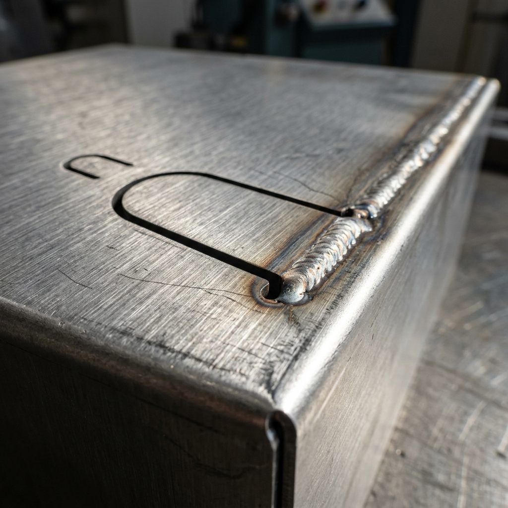
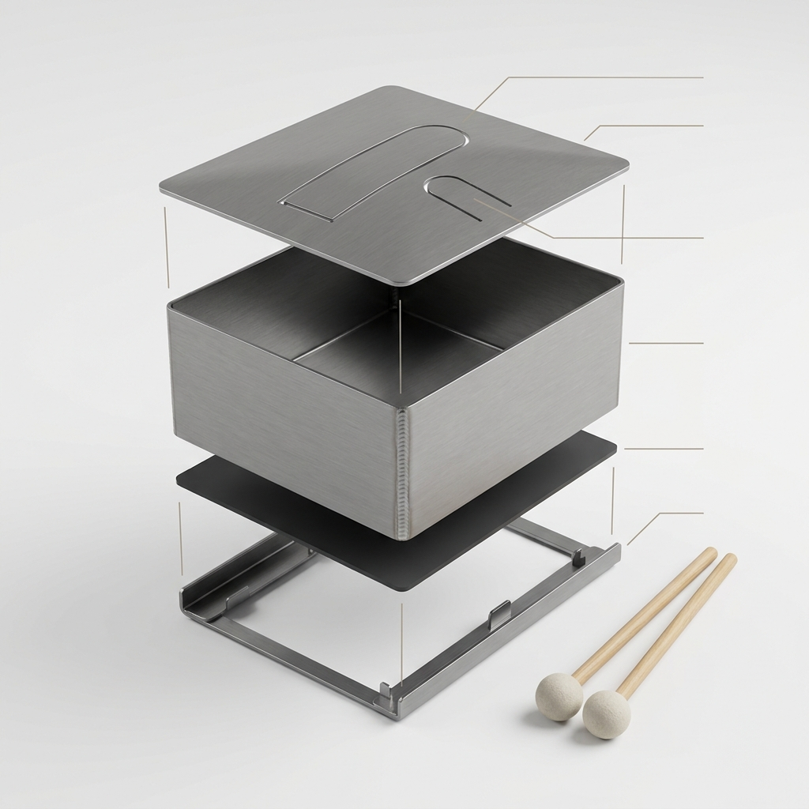

Blueprint Thesis
Keep all twelve resonator boxes dimensionally identical, then tune the chromatic octave through tongue length and small tip-mass corrections. Prototype C3, F#3, and B3 first so the full bank inherits measured root-stiffness corrections.
C3-B312 chromatic primary tongues.
200 x 100 x 80Millimeter steel boxes.
3 sMinimum sustain after rack mounting.
Packet Files
design.md
Private-review chromatic slit-drum bank: twelve identical folded boxes, tuned by measured tongue length corrections.
bom.csv
Core items: 1.5 mm cold-rolled steel, rack isolation strips, M4 retainers, soft mallets, and temporary tuning masses.
validation.csv
Pass gates: 12 primary pitches within +/-10 cents, sustain at least 3 seconds, adjacent cross-talk below target, and ergonomic chromatic sweep.
tuning-notes.md
Leave tongues long, measure raw pitch, trim in small steps, and avoid root grinding.
risks.md
Main risks: root heat damage, weld warp, model mismatch, secondary tongue cross-talk, and rack damping.
tuned-slit-drum-bank-starter.wl
Open the Wolfram starter model
# SPDX-License-Identifier: CERN-OHL-W-2.0 Run: wolframscript -file tuned-slit-drum-bank-starter.wl Outputs: - C3-B3 target frequencies - primary tongue length estimates - secondary fifth-above color tongue estimates - lowest three validation rows
Images


License + Record
Documentation and media: CC BY 4.0. Hardware design data: CERN-OHL-W v2.0.
Interactive Wolfram Model
Live parametric explorer (empirical estimates — not fabrication authority).